lab5-1 Wireshark-ipv4
Lab5-1 IPv4
1 Objective
了解IP (Internet Protocol)的详细信息。
2 Requirements
除Wireshark外，本实验要求使用wget和traceroute/tracert程序。
3 Steps
Step 1: Capture a Trace
在远程服务器上选择一个URL，并使用wget获取内容，例如“wget https://www.uwa.edu.au/”。
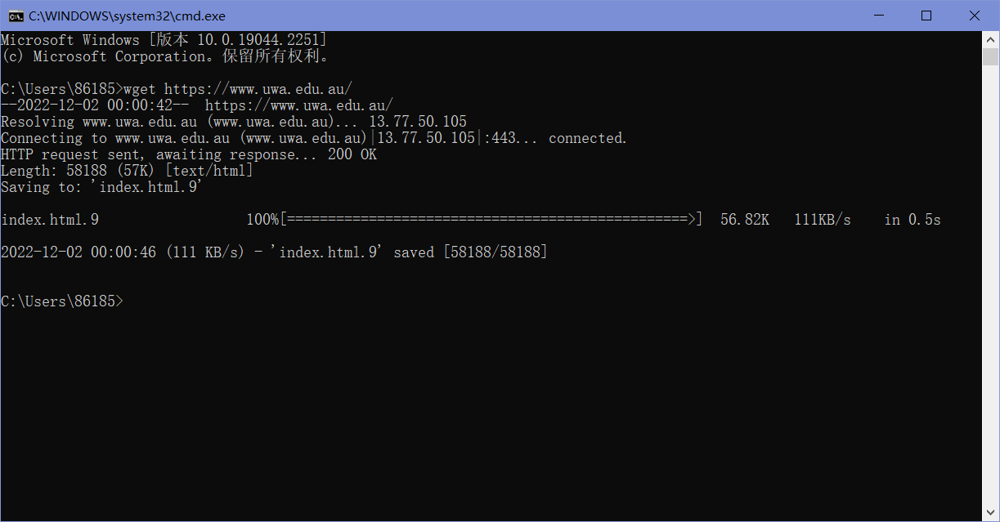
执行到同一远程服务器的traceroute，以检查是否可以发现有关网络路径的信息。在Windows下执行“tracert www.uwa.edu.au”。
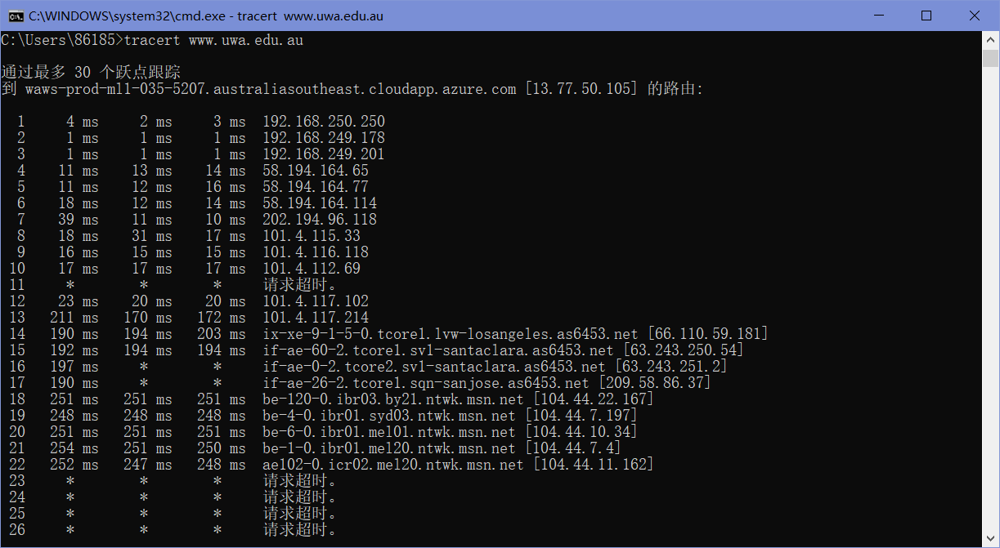
启动Wireshark并使用“tcp port 80”的过滤器开始捕获。确保勾选”enable network name resolution”。
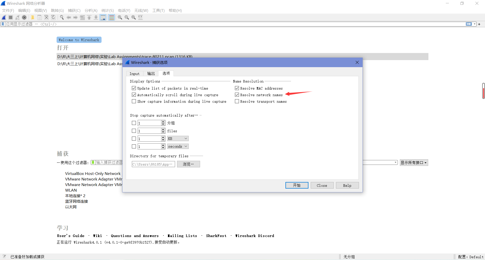
在启动捕获之后，重复上面的wget命令，数据包就会被Wireshark记录下来。
命令执行完毕后，返回Wireshark，我们可以看到结果如下。
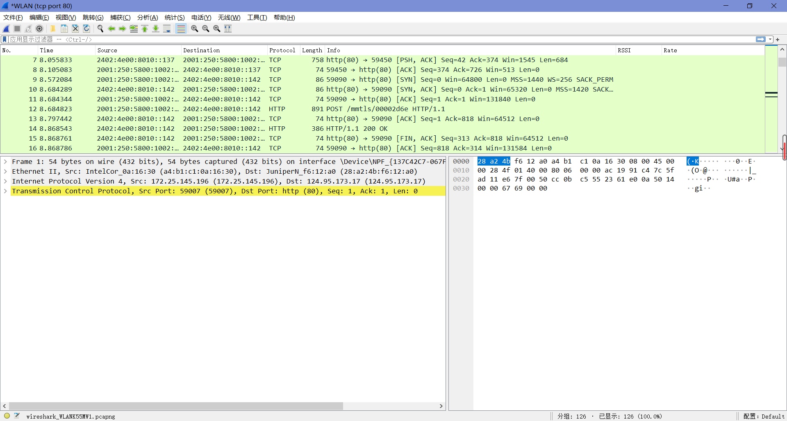
Step 2: Inspect the Trace
选中任意一个数据包，查看它的IP报头的详细信息。
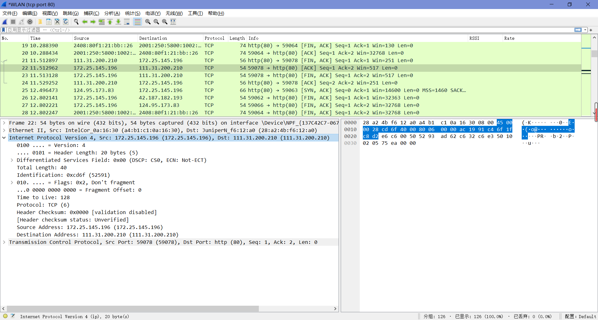
“Version”为4，是”IPv4”的缘故。
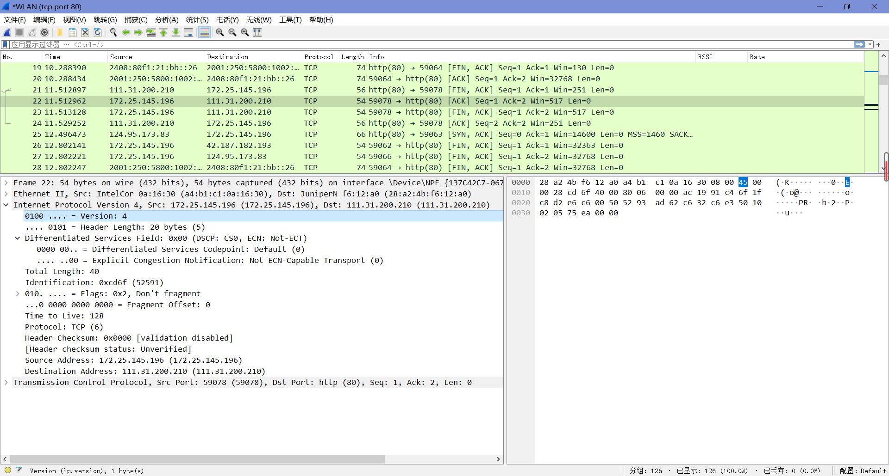
“Header Length”描述了标题长度（可以发现”Version”和”Header Length”字段被打包进了一个字节中）。
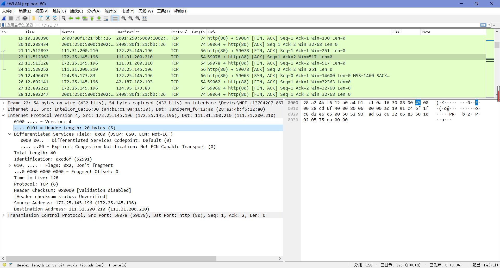
“Differentiated Services Field”包含位标识，用来指示是否应该在路由器上以服务质量和拥塞指示来处理包。
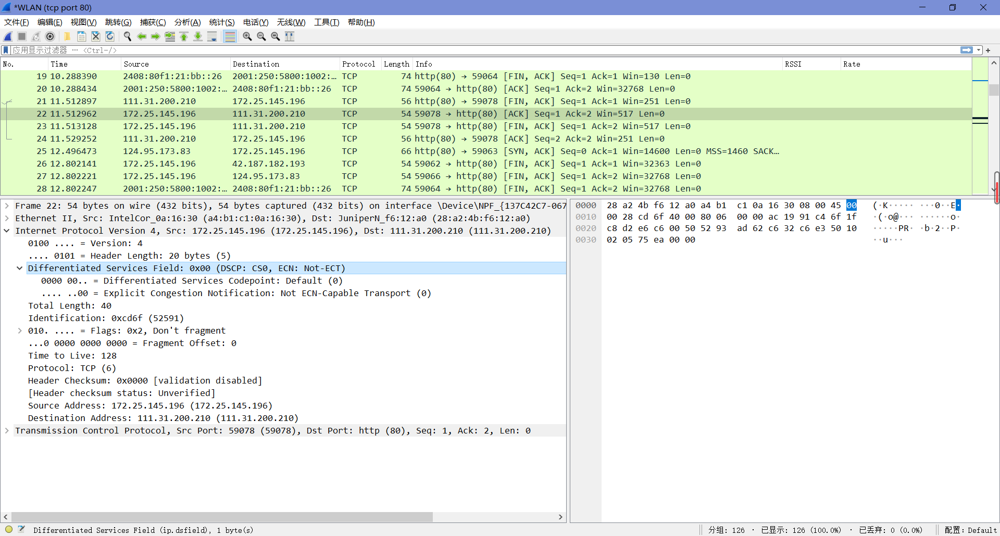
“Total Length”字段顾名思义，描述了这部分信息的总长度。
“Identification”字段用于在一个大的IP包作为多个称为片段的小片段发送时对片段进行分组。
“Flags”和”Fragment Offset”字段，他们紧随”Identification”其后，也与片段有关。
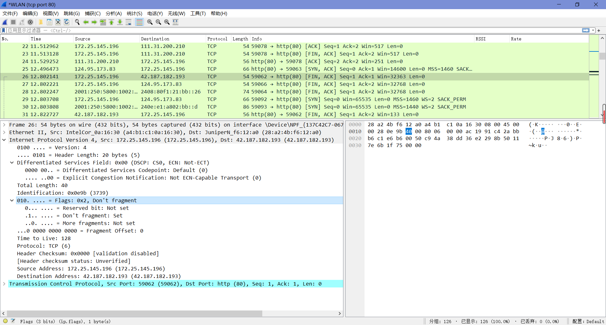
“Time to Live（TTL）”和”Protocol”字段分别描述了持续时间和数据协议类型。
“Header Checksum”用来确保信息传输过程中的正确性，若校验和验证不正确，则会在丢弃掉对应的错误报文后再进行后续操作。
“Source Address”和”Destination Address”描述了源地址和目标地址。
Step 3: IP Packet Structure
用如下结构即可回答问题。
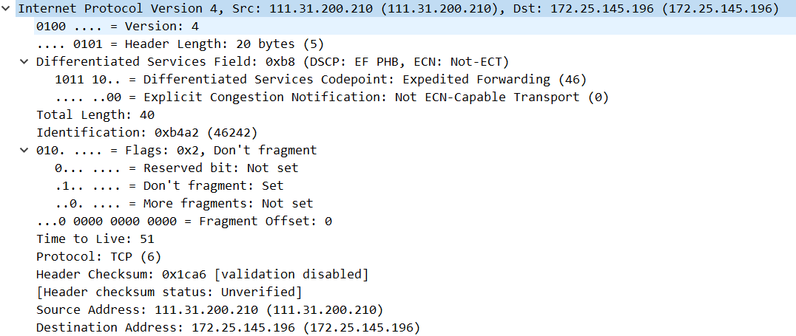
1. What are the IP addresses of your computer and the remote server?
本机IP：111.31.200.210；远程IP：172.25.145.196。
2. Does the Total Length field include the IP header plus IP payload, or just the IP payload?
只包括IP payload。
3. How does the value of the Identification field change or stay the same for different packets? For instance, does it hold the same value for all packets in a TCP connection or does it differ for each packet? Is it the same in both directions? Can you see any pattern if the value does change?
一个连接中所有的包 Identification 都不相同，在不同方向上也不相同，在同一方向上每产生一个数据包会自增 1。

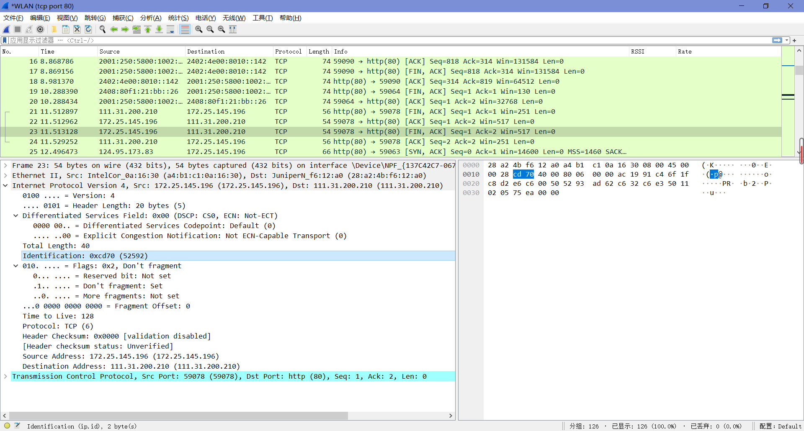
4. What is the initial value of the TTL field for packets sent from your computer? Is it the maximum possible value, or some lower value?
128，不是最大值。
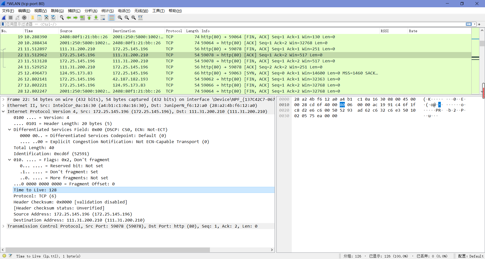
5. How can you tell from looking at a packet that it has not been fragmented? Most often IP packets in normal operation are not fragmented. But the receiver must have a way to be sure. Hint: you may need to read your text to confirm a guess.
如图，设置了”Don’t fragment”。
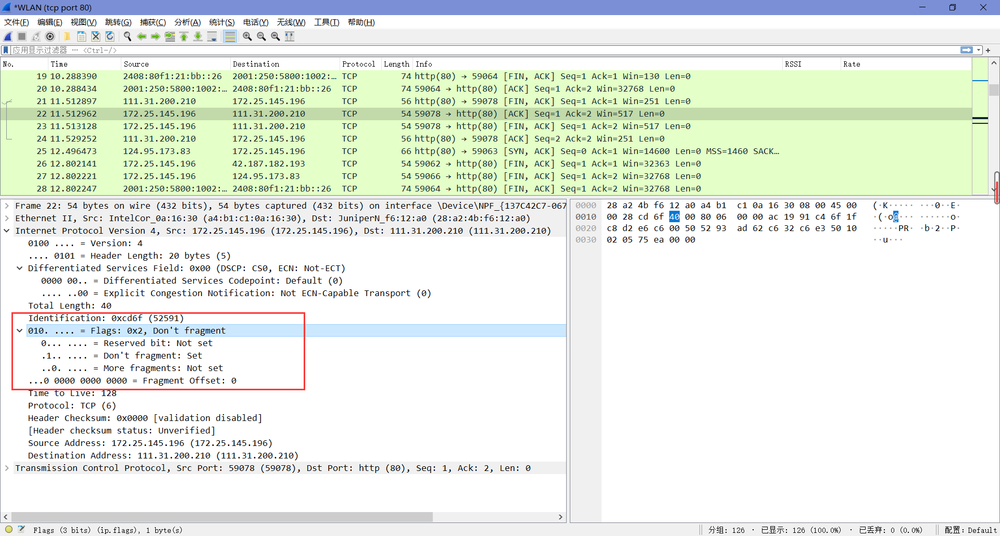
6. What is the length of the IP Header and how is this encoded in the header length field? Hint: notice that only 4 bits are used for this field, as the version takes up the other 4 bits of the byte. You may guess and check your text.
如图即可得知长度为20 bytes，编码为0x45。
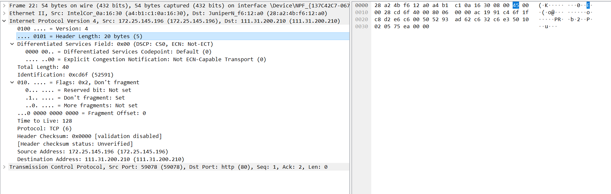
Step 4: Internet Paths
tracert输出通常打印每行一跳的信息，包括测量的往返时间和路由器的IP地址和DNS名称。DNS名称便于确定路由器所属的组织。由于tracert利用了通用路由器实现，所以不能保证它对路径上的所有路由器都有效，当它对路径的某些部分失败时，通常会看到“*”响应。
Step 5: IP Header Checksum
我们可以通过验证包来探究IP报头校验和计算。首先，选择一个IP报头为20字节的包（这是没有选项时的最小报头大小，可以使这个练习更容易），然后按照以下步骤检查校验和值是否正确：
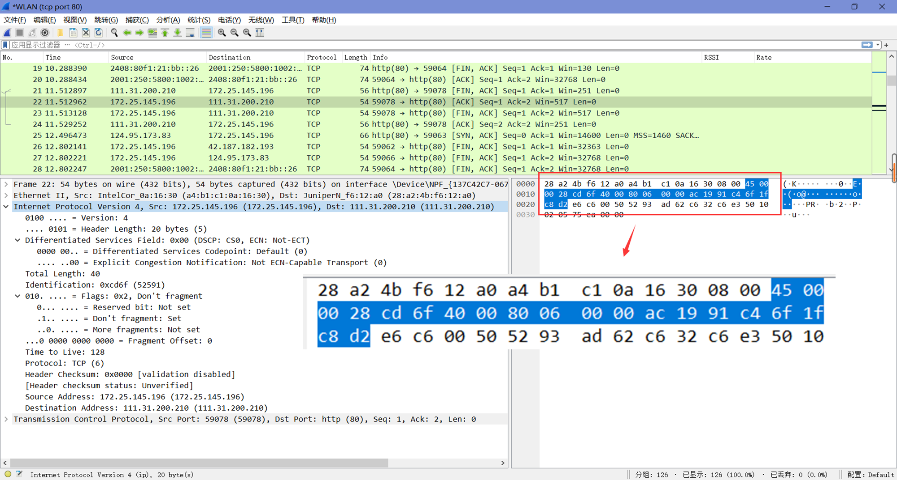
将内容分成10个两个字节(16位)的单词。每个单词将是4个十六进制数字，如这里的第一个单词是”45 00”。
使用常规加法将这10个单词相加。这里经加和后得到结果为4486b。
从结果中计算1s的补和，取任何前导数字(大于单词大小的4位数)并将它们加回到余数中。如在这里，4486b将变为486b+4=486f。
最终的结果若为Oxffff，则说明验证为正确。这里我们得到的结果为0x486f，不是0xffff，说明验证为不正确。我们可以通过Wireshark来验证我们的计算结果：
在”编辑-首选项-Protocols”中找到IPv4项并打开。
勾选”Validate the IPv4 checksum if possible”。

可以看到，刚刚选中的数据包的校验和果然是错误的。
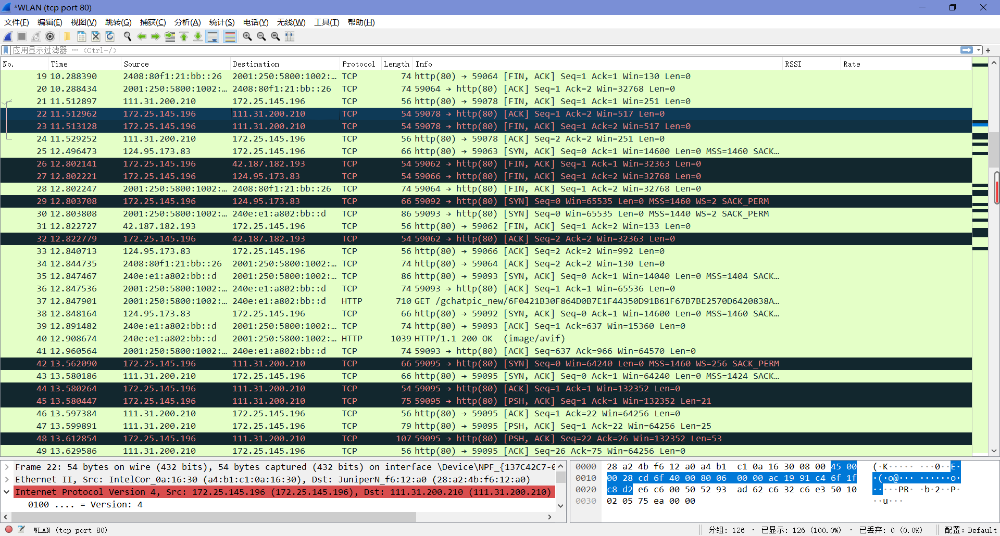
（为了有一次验证正确的经历）我们可以重新选一个包来计算，如Wireshark已显示校验和正确的21号包。我们划分单词后可以求得其和为3fffc，将进位加到低位得：fffc+3=ffff，即最后得到的结果为0xffff，验证正确。
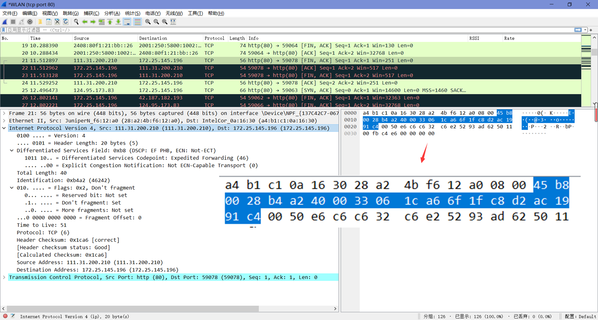